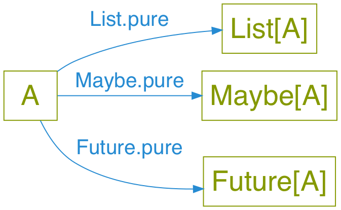
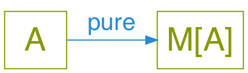
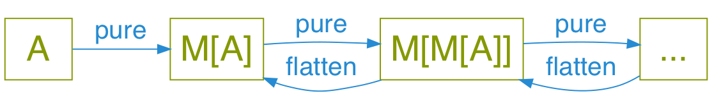
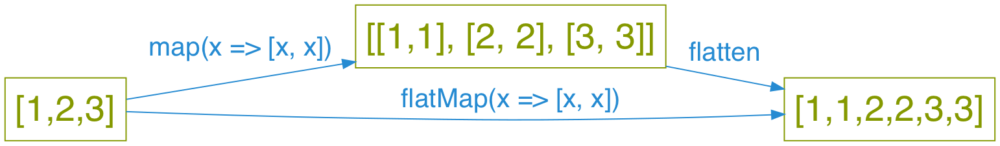
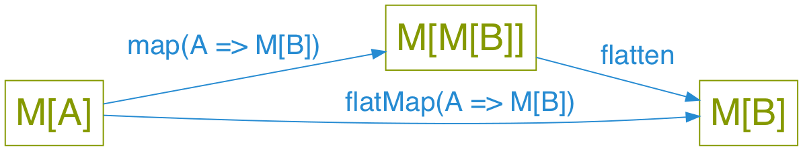

Why are monads hard?
Jake Woods
What's this talk about?
Monads!
Impossible to explain!
… I'm not going to teach you how to use them.
Instead we're going to figure out why they're so hard to learn.
And maybe help you get started.
So why are they so hard?
Monad is an overloaded term
It refers to lots of concepts
It's like trying to learn "Science"
You need to learn it bit-by-bit
Let's look at some Monads
A "Container" type?
// Java-ish List<String> // Contains many strings Optional<String> // Contains a string or nothing Future<String> // Contains a value from the future
// Scala List[String] // Contains many strings Optional[String] // Contains a string or nothing Future[String] // Contains a value from the future
-- Haskell List String -- Contains many strings Maybe String -- Contains a string or nothing Async String -- Contains a value from the future
A generic type!
// Java-ish Monad<A>
// Scala Monad[A]
-- Haskell Monad a
Example
// Java-ish Integer // Definitely not a Monad List<A> // Could be a Monad Optional<A> // Could be a Monad
// Scala Int // Definitely not a Monad List[A] // Could be a Monad Optional[A] // Could be a Monad
-- Haskell Int -- Definitely not a Monad List a -- Could be a Monad Optional a -- Could be a Monad
A type with pure
// Java-ish interface Monad<A> { static Monad<A> pure(A a); }
// Scala def pure(a: A): Monad[A]
-- Haskell pure :: (Monad m) => a -> m a
It works on Lists!
// Java-ish List.pure("Hello") == List.of("Hello");
// Scala List.pure("Hello") == List("Hello")
-- Haskell pure "Hello" :: List String == ["Hello"]
And Optionals!
// Java-ish Optional.pure("Hello") == Optional.of("Hello");
// Scala Option.pure("Hello") == Some("Hello")
-- Haskell pure "Hello" :: Maybe String == Just "Hello"
And Future!
// Java-ish Future.pure("Hello") == Future.completedFuture("Hello");
// Scala Future.pure("Hello") == Future.successful("Hello")
-- Haskell pure "Hello" :: Async String == CompletedFuture "Hello"
Same interface, different implementation

Generalised

A type with flatten
A.k.a join or concat
// Java-ish Monad<A> flatten(Monad<Monad<A>> a);
// Scala def flatten(a: Monad[Monad[A]]): Monad[A]
-- Haskell concat :: (Monad m) => m (m a) -> m a
Like Lists
// Java-ish List.of(List.of(1,1), List.of(2,2)).flatten == List.of(1,1,2,2);
// Scala List(List(1,1), List(2,2)).flatten == List(1,1,2,2);
-- Haskell concat [[1,1],[2,2]] == [1,1,2,2]
Or Optionals!
// Java-ish Optional.of(Optional.of("Hi")).flatten == Optional.of("Hi"); Optional.of(Optional.empty).flatten == Optional.empty;
// Scala Some(Some("Hi")).flatten == Some("Hi") Some(None).flatten == None
-- Haskell concat Just (Just "Hi") == Just "Hi" concat Just Nothing == Nothing
Or Futures
// Java-ish Future.of(Future.of("Hello")).flatten == Future.of("Hello");
// Scala Future.successful(Future.successful("Hello")).flatten == Future.successful("Hello")
-- Haskell concat (Async (Async "Hello")) :: Async (Async String) == (Async "Hello")
Same interface, different implementation
Generalised
A type that can be nested
A type that can be arbitrarily nested

A type with flatMap
Also known as bind or >>=
// Java-ish interface Monad<A> { Monad<B> flatMap(Function<A, Monad,B>> fn); }
// Scala trait Monad[A] { Monad[B] flatMap(fn: A => Monad[B]): Monad[B] }
-- Haskell bind :: (Monad m) => m a -> (a -> m b) -> m b
Example
[1,2,3].flatMap(a => [a, a]) // Returns [1,1,2,2,3,3] Maybe(1).flatMap(value => Some(value+2)) // Returns Maybe(3) Maybe(1).flatMap(value => None) // Returns None
flatMap using map and flatten

Generalised

Also known as bind
-- >>= is pronounced bind in Haskell. Wat! [1,2,3] >>= \a -> [a, a] -- Returns [1,1,2,2,3,3] Just 1 >>= \value -> Just (value+2) -- Returns Just 3 Just 1 >>= \value -> Nothing -- Returns Nothing
Something used with For/Do
// Scala for { a <- Some(5) b <- Some(10) } yield a + b // Returns: Some(15)
-- Haskell do a <- Just 5 b <- Just 10 pure a + b -- Returns: Just 15
A way of composing certain types of functions
Normal Function Composition
// Java-ish Function<String, String> toUpperCase = ...; Function<String, String> trim = ...; Function<String, String> toUpperCaseAndtrim = toUpperCase.compose(trim);
// Scala def toUpperCase(input: String): String = ... def trim(input: String): String = ... def toUpperCaseAndTrim = toUpperCase.compose(trim)
-- Haskell toUpperCase :: String -> String trim :: String -> String toUpperCaseAndTrim = toUpperCase . trim
Monadic Function Composition
// Java-ish Function<String, Promise<String>> toUpperCase = ...; Function<String, Promise<String>> trim = ...; Function<String, Promise<String>> toUpperCaseAndTrim = toUpperCase.monadCompose(trim);
// Scala def toUpperCase(input: String): Promise[String] = ... def trim(input: String): Promise[String] = ... def toUpperCaseAndTrim = monadCompose(toUpperCaseService, trimService)
-- Haskell toUpperCase :: String -> Promise String trim :: String -> Promise String toUpperCaseAndTrim = toUpperCase >=> trim
Something to do with Sequential Computations?
In most languages sequence is implied:
def main() = { // Executes doA then doB then doC and then returns val a = doA(); val b = doB(); val c = doC(); a + b + c }
But in some languages that isn't the case
-- Executes in an arbitrary order as everything is lazy main = let a = doA b = doB c = doC in a + b + c
Monads imply sequential computation
-- Executes doA then doB then doC and then returns a result main = do a <- doA b <- doB c <- doC pure a + b + c
Something for managing side effects?
In some languages we can freely mix side-effects into normal code:
// Java-ish Integer add(Integer a, Integer b) { System.out.println("Hello World!"); return a + b; }
// Scala def add(a: Int, b: Int): Int = { println("Hello World!") a + b }
But not in all languages
add :: Int -> Int -> Int add a b = do println "Hello World" -- ERROR! Doesn't compile a + b
Instead we have to mark side effecting functions with a type
add :: Int -> Int -> IO Int add a b = do println "Hello World" -- Compiles pure $ a + b
flatMap lets us compose that type.
And we get flatMap from Monad!
They're all Monads!
No wonder they're so hard to learn…
Something something Laws
- There are rules defining how Monads must be implemented
- Mostly it's about making them act in a sane way
- They're outside the scope of this talk
But wait! There's more!
We need to talk about Maybe/List/Promise/Reader/Writer/State/IO
Well…
They are Monads!
But that's the boring bit about them.
Each of those types do something unique and valuable!
They enrich a type to give it extra functionality
MaybeaddsnullListadds multiple valuesPromiseadds asynchronyReaderadds dependency injectionWriteradds loggingStateadds arbitrary stateIOadds the ability to use the computer
This has nothing to do with Monads!
Example
// Java-ish Integer value; // A boring integer List<Integer> values; // An exciting bunch of integers! Future<Integer> value; // An exciting asynchronous integer!
// Scala value: Int; // A boring integer values: List[Int]; // An exciting bunch of integers! value: Future[Int]; // An exciting asynchronous integer!
-- Haskell value :: Int -- A boring integer values :: List Int -- An exciting bunch of integers! value :: Async Int -- An exciting asynchronous integer!
You have to learn each one individually, Monads won't help you here!
Then why should I care if they're Monads?
They're all Generic types
// Java-ish Maybe<T> List<T> Promise<T> Reader<T> Writer<T> State<T> IO<T>
// Scala Maybe[T] List[T] Promise[T] Reader[T] Writer[T] State[T] IO[T]
-- Haskell Maybe t, List t, Promise t, Reader t Writer t, State t, IO t
We want to compose them…
Monads help us compose generic types!
They're a Design Pattern for a specific type of composition.
When I say "X is a Monad" I know:
- This type is generic
- This type enriches normal types with extra behavior
- I can compose this type using flatMap/bind
- I can compose this type using For/Do comprehension
It's a design pattern!
Learn once, write everywhere!
In Summary
A Monad implies a whole bunch of things
Try to learn them a little bit at a time!
It's ok to be overwhelmed!
This stuff takes time to learn.
Extra Reading
Thanks!
Questions?